Giappone
Il Giappone è uno Stato insulare dell'Asia orientale. Situato nell'oceano Pacifico, il Giappone è limitato a ovest dal mar del Giappone, a nord dal mare di Ochotsk, a est dall'oceano Pacifico settentrionale e a sud dal mar Cinese Orientale. È un arcipelago per lo più collinare di 6 852 isole. La vetta più alta è il Monte Fuji, un vulcano attivo. Con una popolazione di circa 126 milioni di abitanti è l'undicesimo Stato più popoloso del mondo. La Grande Area di Tokyo, che include Tokyo e numerose prefetture vicine, è la più grande area metropolitana del mondo con oltre 38 milioni di residenti.
Sushi
In Giappone la parola sushi significa letteralmente "aspro" e si riferisce a una vasta gamma di cibi preparati con riso. Al di fuori del Giappone viene spesso inteso come pesce crudo o come riferimento a un ristretto genere di cibi giapponesi, come il maki o anche il nigiri e il sashimi (che in Giappone non è considerato sushi perché composto di solo pesce fresco).
Tokyo
Tokyo letteralmente capitale orientale, trovandosi a est della precedente capitale Kyoto, situata nella regione di Kantō sul lato sud-orientale dell'isola principale giapponese, Honshu, e comprendente anche le isole Izu e Ogasawara.Ospita l'Imperatore del Giappone e il governo del Giappone.
Spiagge in Giappone
Il Giappone è contornato da un arcipelago di oltre 6.852 isole vulcaniche, 500 delle quali tropicali o subtropicali. Trentamila chilometri di coste dove andare alla ricerca della spiaggia ideale. Eppure, queste mete paradisiache sono quasi tutte disabitate e sono poche quelle organizzate strutture turistiche e servizi balneari.